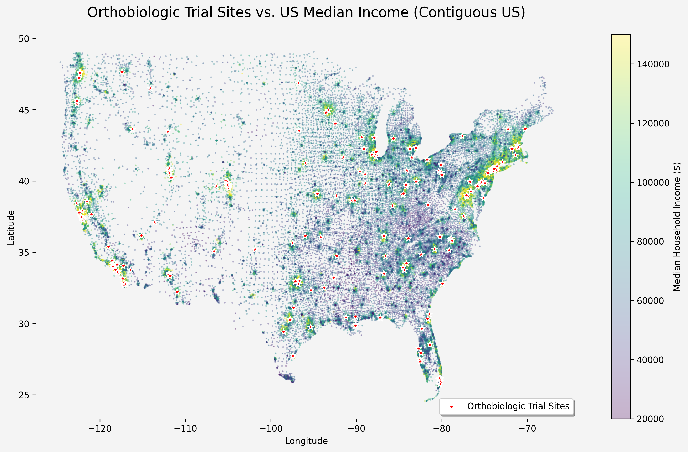
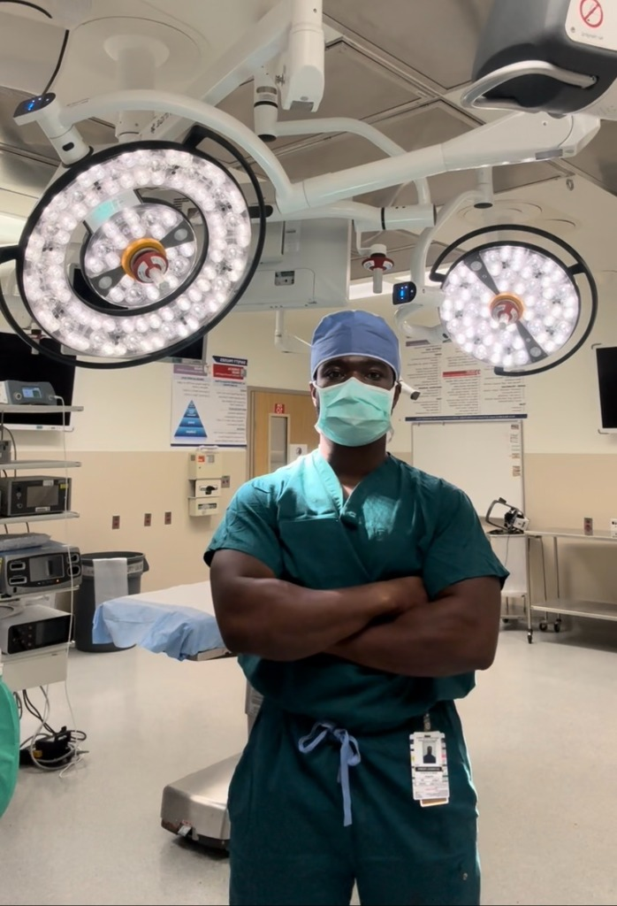
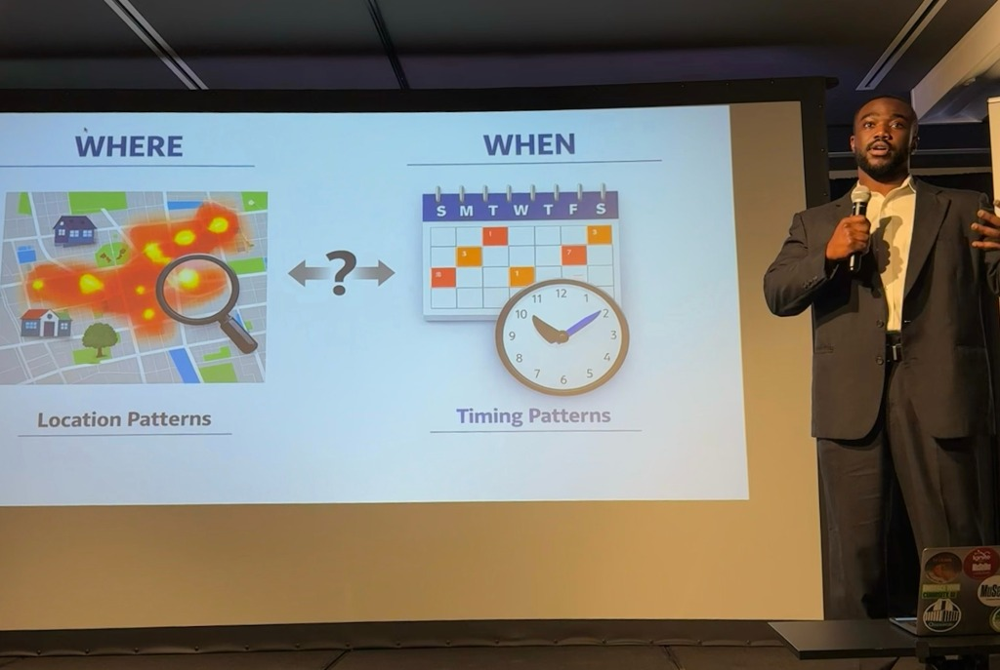
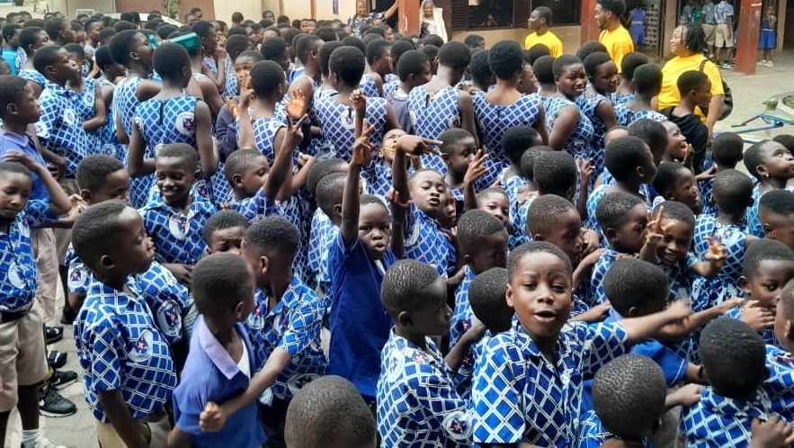
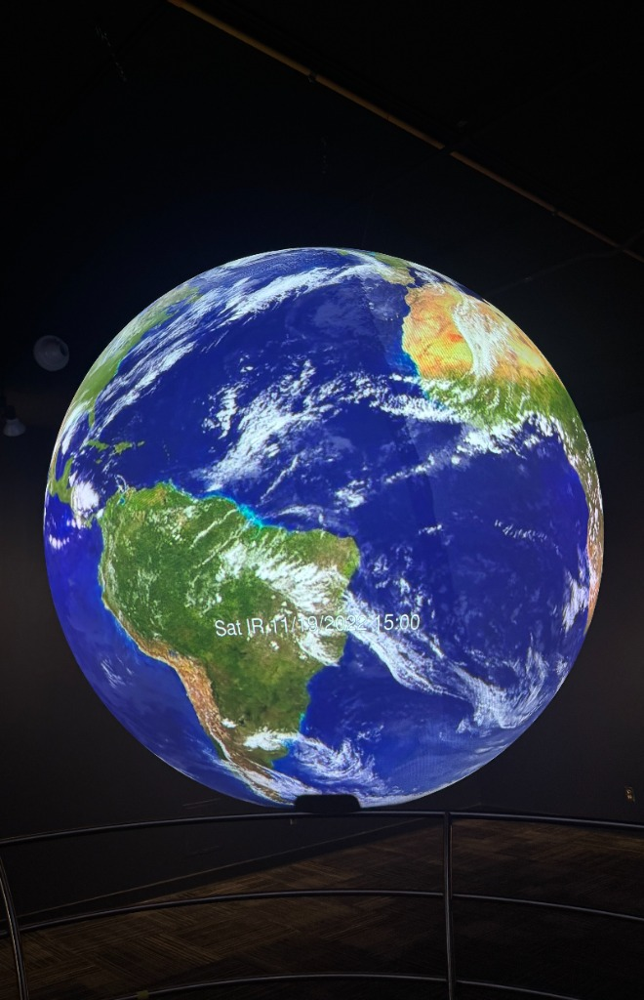
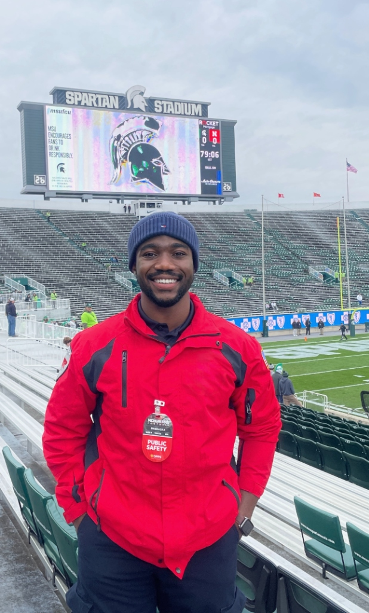
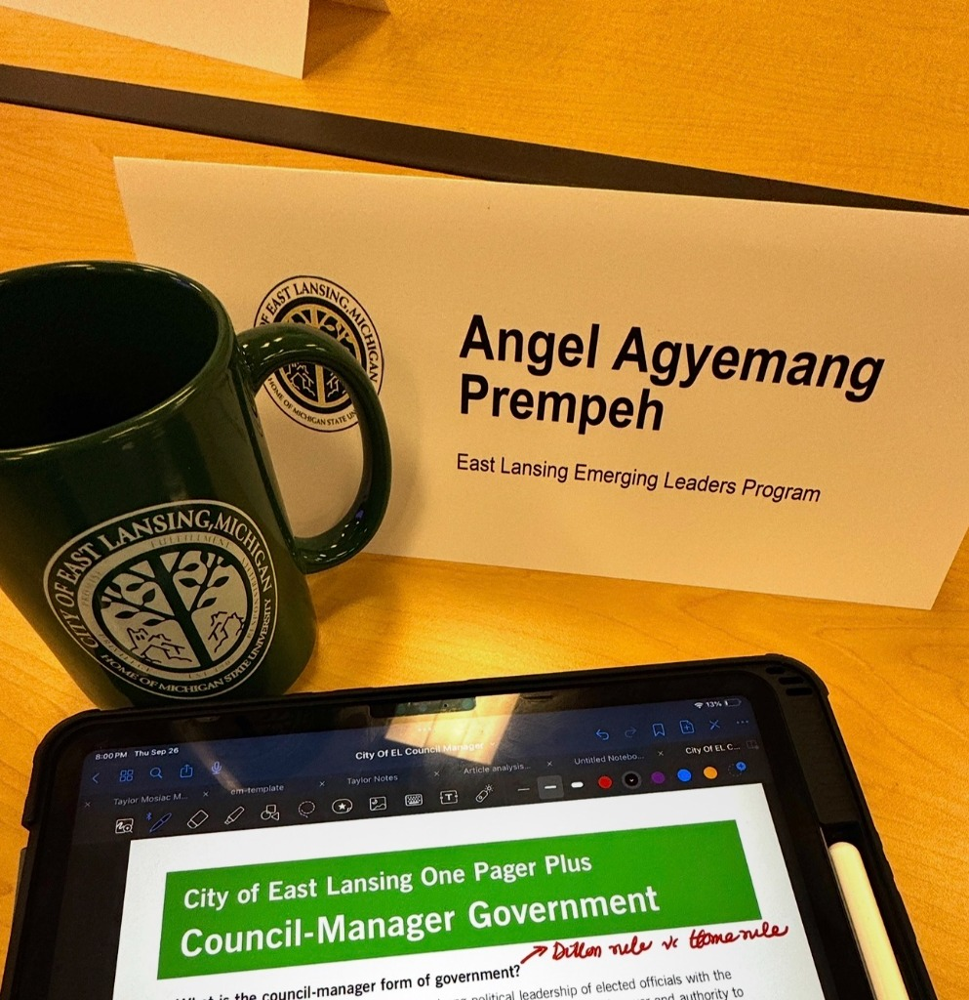

I am a medical student at Michigan State University pursuing orthopedic surgery with research interests in health equity, public health and AI-driven clinical decision support. I co-founded Mobilize Africa, a non profit which delivers medical and educational resources to underserved communities across Africa. I'm open to research collaborations and development partnerships. Feel free to reach out via email!
Surgeons spend hours bent over the operating field, driving the low-back muscle load that ends many careers early. A passive back-support exoskeleton shares that work. This interactive model turns your own case volume and posture into a personalized estimate of how much load the device lifts off your spine.
Calculate Your Load Savings →An AI-powered platform that identifies waste in surgeon preference cards by analyzing how surgeons actually operate, generating updated recommendations with cost savings estimates to tackle a $5 billion healthcare problem.
Read Full Write-Up →What is the cost to performance of an achilles tendon tear among NFL players? We take a look at this by matching injured players to uninjured controls to answer the question.
Read publication at..
We're investigating whether orthobiologic trials show geographic clustering that could limit evidence generalizability. When treatments are validated only in selective populations, questions arise about whether that evidence applies broadly to diverse patients. Our interactive map allows you to explore geographic access to orthobiologic trials and assess trial availability in your community.
Explore the Interactive Map →
In this project we're looking at how we can use advanced computational methods on clinical datasets to identify early predictors of postoperative complications. The goal is to improve risk stratification and decision-making in surgical care.

What if gun violence spread like a disease? If so, could we track its spread, identify trigger points, and intervene at the right place and time? This work uses spatial and temporal modeling of public data to study how gun violence clusters and how those patterns can guide targeted prevention strategies.

Co-founded nonprofit that delivers medical and educational supplies to schools and clinics in underserved regions in West Africa.
Follow our work on Instagram →Awarded E. Anthony Rankin Scholar by the Society of Military Orthopedic Surgeons for immersive rotation at Walter Reed National Military Medical Center.

I maintain a public-facing platform with over 11,000 followers where I translate research, health policy, and clinical topics for a general audience. Check out my TikTok (@angelstictoc) and Instagram (@angelgaprempeh).
Featured on ABC4 WoodTV discussing Reach Out to Youth, an initiative that brings children from underserved communities into medical environments. I also engage in public-facing health education through media and digital platforms.

Completed EMT training with hands-on experience in emergency response, patient assessment, and basic life support.

Selected as a participant in a local government leadership program focused on civic engagement, municipal operations, and community impact. Worked alongside city officials and community leaders to gain insight into local governance, public service, and policy-making.
Orthopedic Research and Reviews • 2026
CONTRIBUTORS: Angel A Prempeh; Olorunferanmi Oni; Allison Tenfelde.
View Publication →Journal of Orthopaedic Reports • 2026
CONTRIBUTORS: Angel G.A. Prempeh; Emilia Ferreira; Hannah Gibbs; Nicholas Lopreiato.
View Publication →Journal of Intensive Care Medicine • 2026
CONTRIBUTORS: Angel G. A. Prempeh; Allison Tenfelde.
View Publication →Journal of Orthopaedic Surgery and Research • 2025
Comparative study evaluating patient outcomes with advanced irrigation systems in knee arthroplasty.
View Publication →Manuscript in Preparation
Developing predictive models using deep learning to identify high-risk patients and enable early intervention.
The Physician and Sportsmedicine • 2026
Matched cohort study analyzing the impact of Achilles tendon ruptures on NFL player performance.
View Publication →JMIRx Med • 2022 • ★ Best Poster Award
Epidemiological modeling study examining mask effectiveness in influenza prevention.
View Publication →JMIRx Med • 2022
A minority of individuals wearing masks substantially reduced the number of influenza infections across seasons. Considering the efficacy rates of masks and the relatively insignificant monetary cost, we highlight that it may be a viable alternative or complement to influenza vaccinations.
View Publication →